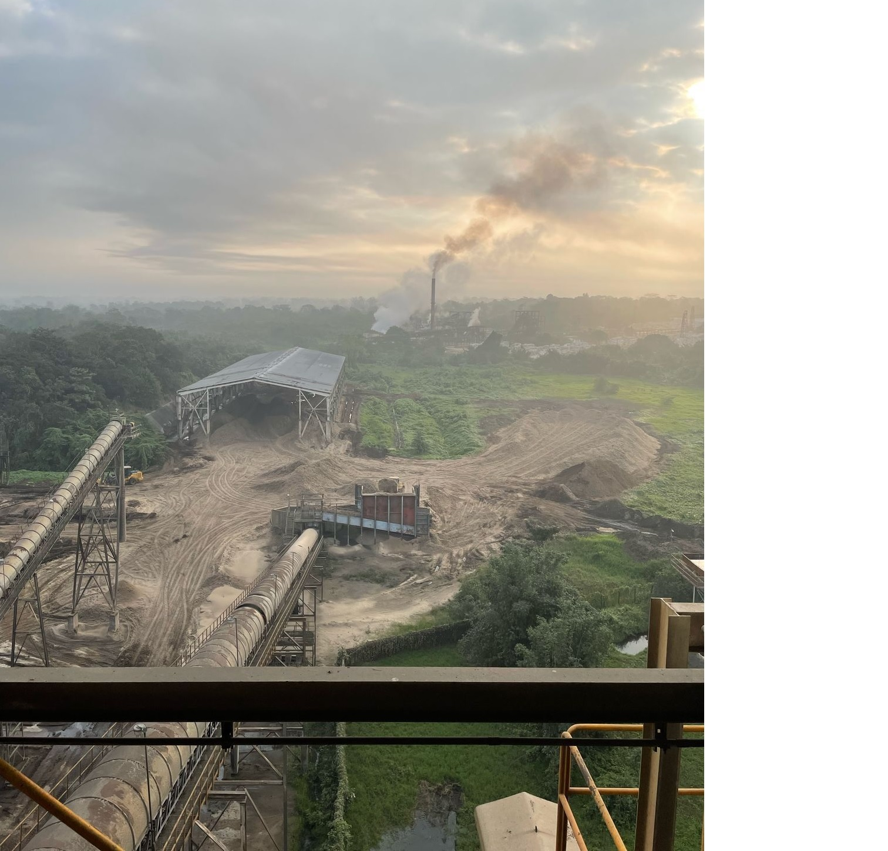
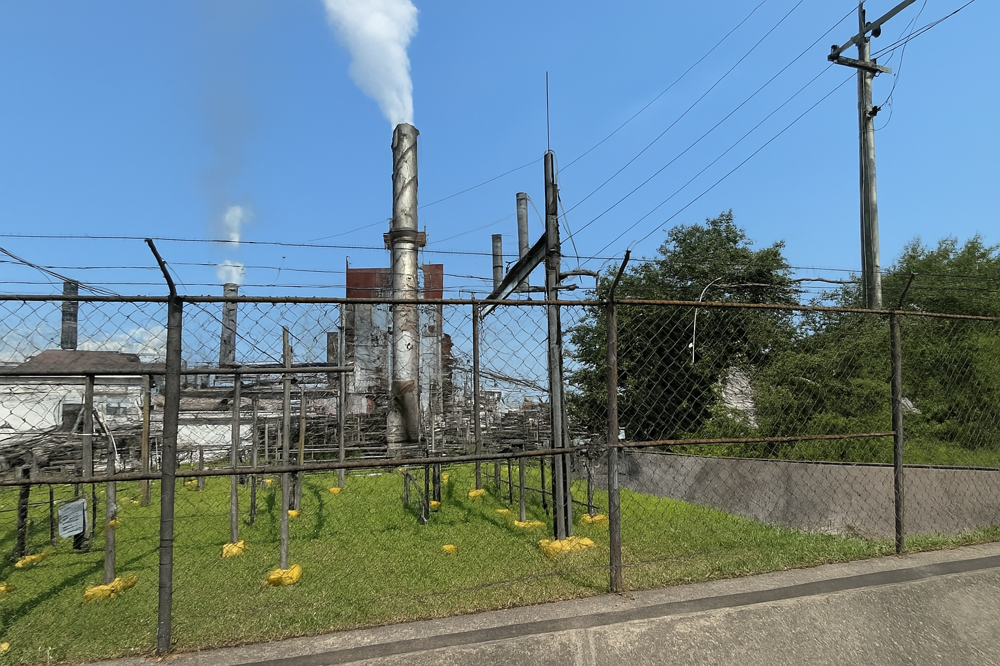
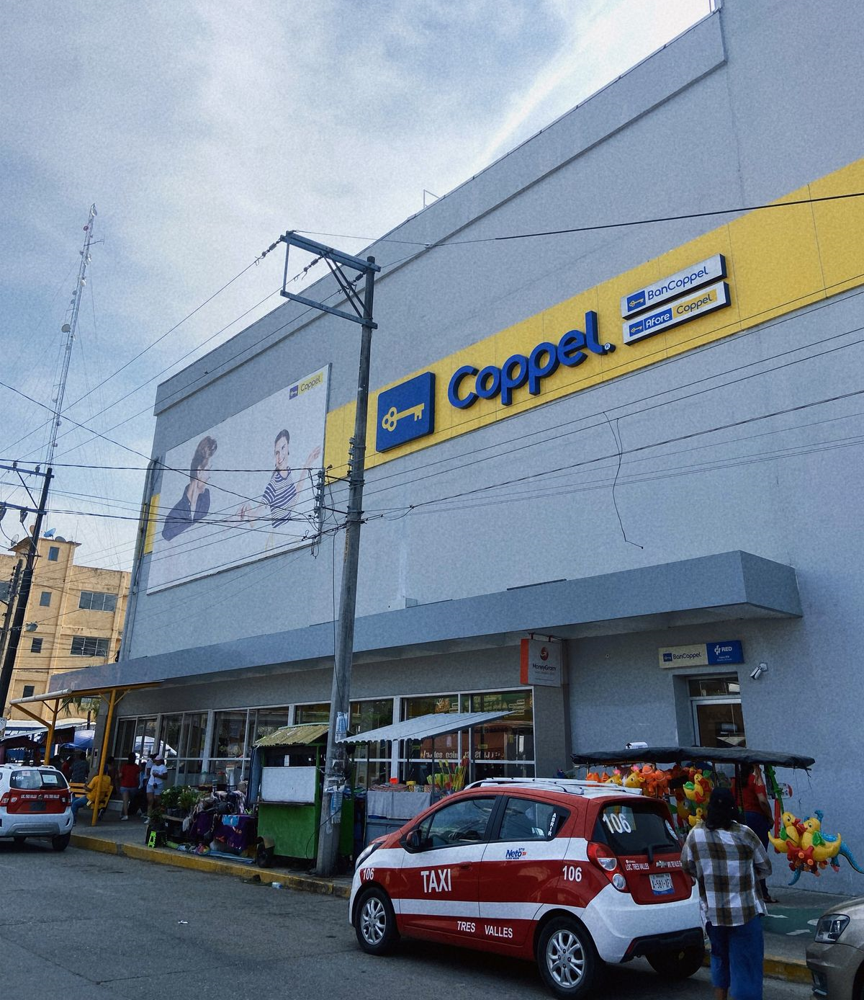
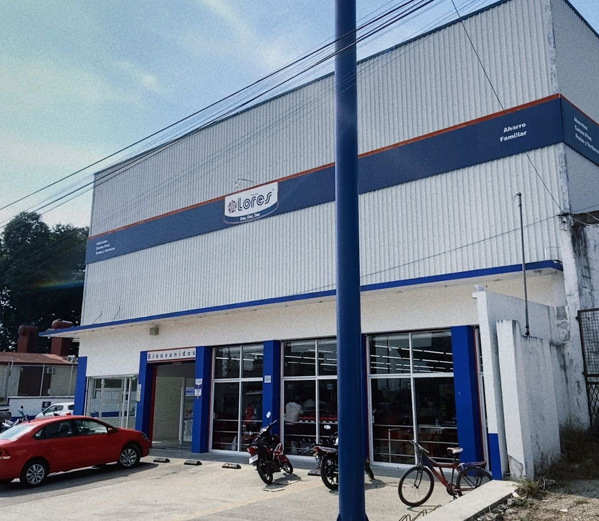
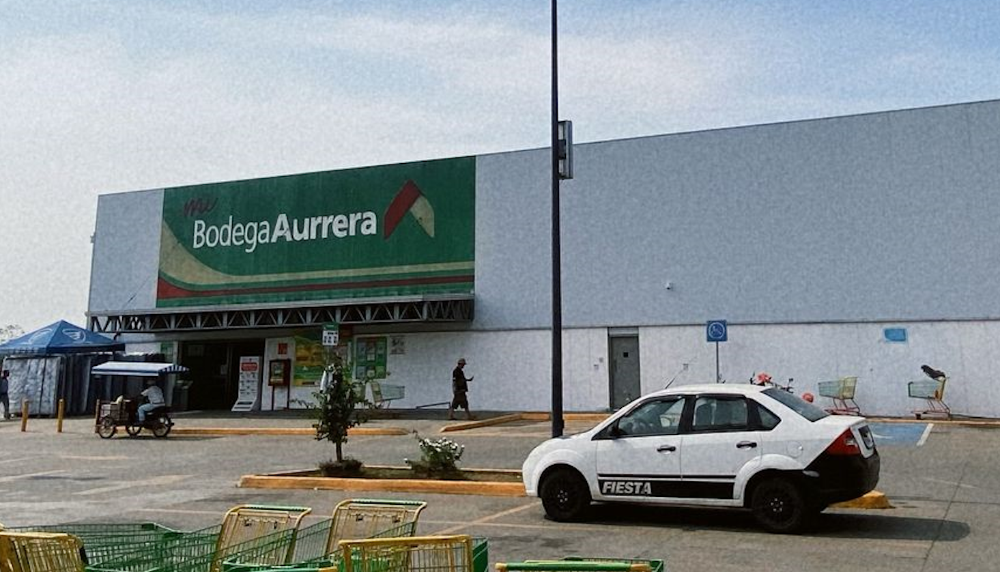
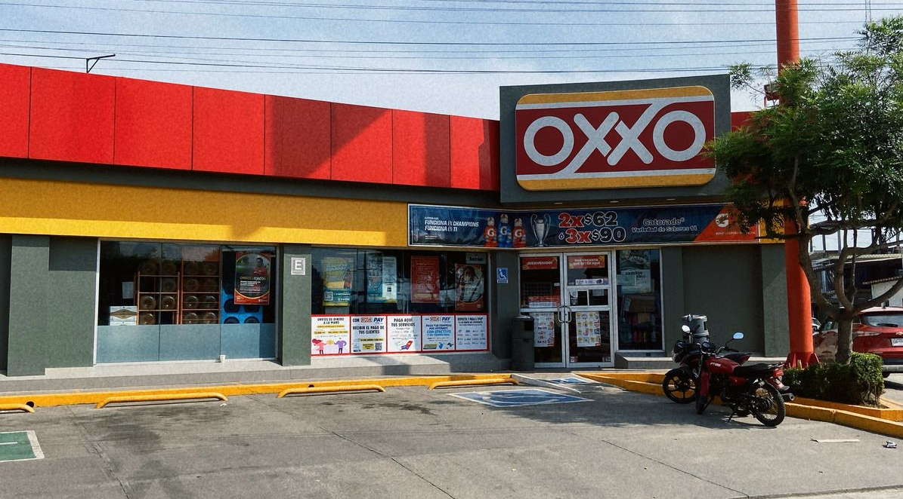

El municipio de Tres Valles es un municipio del estado mexicano de Veracruz, declarado municipio libre por decreto el 25 de noviembre de 1988. Se encuentra ubicado en la baja cuenca del Papaloapan, colinda con el estado de Oaxaca y los municipios de Tierra Blanca y Cosamaloapan.
Tres valles es un municipio en el que muchas empresas tanto grandes como pequeñas toman lugar y mueven la economía de este. En este pequeño portal veremos estos mismos lugares y establecimientos de manera general.
El ingenio de Tres Valles se encarga de producir azúcar para producir bebidas no alcohólicas, es importante por su aporte a la economía del municipio.


La papelera de Tres Valles "Scribe", fabrican todo tipo de papeles para el uso personal o empresarial.

Coppel vende todo tipo de articulos como ropa, electrodomésticos, tecnología, moda, decoraciones para el hogar entre otros para todo el municipio.

Tanto Lores como Bodega Aurrera, venden todo tipo de articulos para las despensas de las familias en el municipio.


Oxxo también se suma aportando 3 tiendas de conveniencia al municipio.
